vignettes/sad_pkpd.Rmd
sad_pkpd.RmdThis document contains exploratory plots for single ascending dose PK and PD data as well as the R code that generates these graphs. The plots presented here are based on simulated data.
pkpd_data <- case1_pkpd %>%
arrange(DOSE) %>%
subset(,-IPRED) %>%
mutate(TRTACT_low2high = factor(TRTACT, levels = unique(TRTACT)),
TRTACT_high2low = factor(TRTACT, levels = rev(unique(TRTACT))),
DAY_label = paste("Day", PROFDAY),
DAY_label = ifelse(DAY_label == "Day 0","Baseline",DAY_label))
LOQ = 0.05 #ng/ml
dose_max = as.numeric(max(pkpd_data$DOSE))
pk_data <- pkpd_data %>%
filter(CMT == 2) %>%
mutate(LIDVNORM = LIDV / as.numeric(DOSE))
pk_data_cycle1 <- pk_data %>%
filter(CYCLE == 1)
pd_data <- pkpd_data %>%
filter(CMT == 3)
pd_data_baseline_day85 <- pkpd_data %>%
filter(CMT == 3,
DAY_label %in% c("Baseline", "Day 85"))
pk_vs_pd_data <- pkpd_data %>%
filter(!is.na(LIDV)) %>%
subset(,-c(EVENTU,NAME)) %>%
spread(CMT,LIDV) %>%
rename(Concentration = `2`, Response = `3`)
NCA <- pk_data_cycle1 %>%
group_by(ID, DOSE) %>%
filter(!is.na(LIDV)) %>%
summarize(AUC_last = caTools::trapz(TIME, LIDV),
Cmax = max(LIDV)) %>%
tidyr::gather(PARAM,VALUE,-c(ID, DOSE)) %>%
ungroup() %>%
mutate(VALUE_NORM = VALUE / DOSE)
AUC_last <- NCA %>%
filter(PARAM == "AUC_last") %>%
rename(AUC_last = VALUE) %>%
subset(,-c(DOSE,PARAM,VALUE_NORM))
pk_vs_pd_data_day85 <- pk_vs_pd_data %>%
filter(DAY_label == "Day 85",
!is.na(Concentration),
!is.na(Response)) %>%
left_join(AUC_last)
time_units_dataset <- "hours"
time_units_plot <- "days"
trtact_label <- "Dose"
dose_label <- "Dose (mg)"
conc_label <- "Concentration (ng/ml)"
auc_label <- "AUCtau (h.(ng/ml))"
concnorm_label <- "Normalized Concentration (ng/ml)/mg"
sex_label <- "Sex"
w100_label <- "WEIGHTB>100"
pd_label <- "FEV1 (mL)"
cens_label <- "Censored"Summarize the data in a way that is easy to visualize the general trend of PK over time and between doses. Using summary statistics can be helpful, e.g. Mean +/- SE, or median, 5th & 95th percentiles. Consider either coloring by dose or faceting by dose. Depending on the amount of data one graph may be better than the other.
When looking at summaries of PK over time, there are several things to observe. Note the number of doses and number of time points or sampling schedule. Observe the overall shape of the average profiles. What is the average Cmax per dose? Tmax? Does the elimination phase appear to be parallel across the different doses? Is there separation between the profiles for different doses? Can you make a visual estimate of the number of compartments that would be needed in a PK model?
ggplot(data = pk_data_cycle1, aes(x = NOMTIME,
y = LIDV,
group = DOSE,
color = TRTACT_high2low)) +
xgx_geom_ci(conf_level = 0.95) +
xgx_scale_y_log10() +
xgx_scale_x_time_units(units_dataset = time_units_dataset, units_plot = time_units_plot) +
labs(y = conc_label, color = trtact_label) +
xgx_annotate_status(status)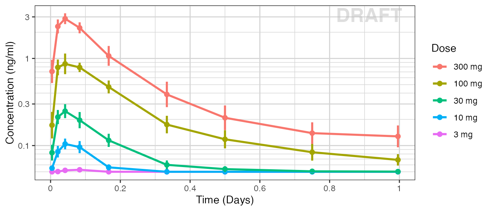
ggplot(data = pk_data_cycle1, aes(x = TIME, y = LIDV)) +
geom_line(aes(group = ID), color = "grey50", size = 1, alpha = 0.3) +
geom_point(aes(color = factor(CENS), shape = factor(CENS))) +
scale_shape_manual(values = c(1, 8)) +
scale_color_manual(values = c("grey50", "red")) +
xgx_geom_ci(aes(x = NOMTIME, color = NULL, group = NULL, shape = NULL), conf_level = 0.95) +
xgx_scale_y_log10() +
xgx_scale_x_time_units(units_dataset = time_units_dataset, units_plot = time_units_plot) +
labs(y = conc_label, color = trtact_label) +
theme(legend.position = "none") +
facet_grid(.~TRTACT_low2high) +
xgx_annotate_status(status)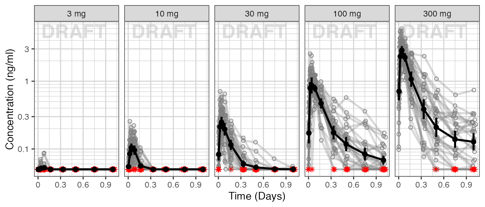
ggplot(data = pk_data_cycle1,
aes(x = NOMTIME,
y = LIDVNORM,
group = DOSE,
color = TRTACT_high2low)) +
xgx_geom_ci(conf_level = 0.95, alpha = 0.5, position = position_dodge(1)) +
xgx_scale_y_log10() +
xgx_scale_x_time_units(units_dataset = time_units_dataset, units_plot = time_units_plot) +
labs(y = concnorm_label, color = trtact_label) +
xgx_annotate_status(status)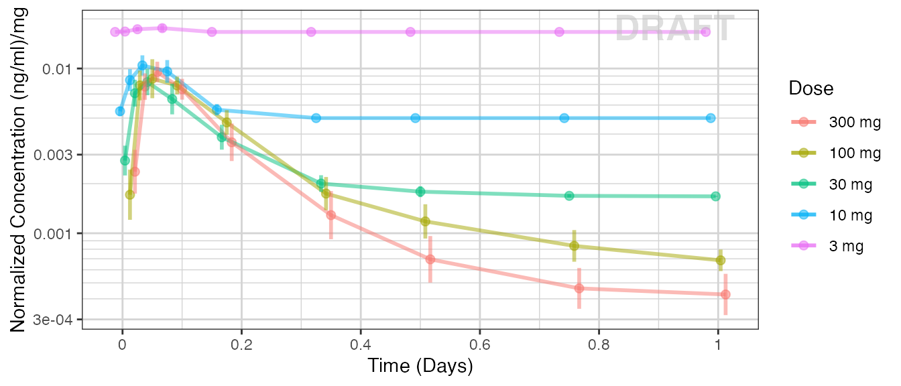
Observe the dose normalized AUC and Cmax over different doses. Does the relationship appear to be constant across doses or do some doses stand out from the rest? Can you think of reasons why some would stand out? For example, the lowest dose may have dose normalized AUC much higher than the rest, could this be due to BLQ observations? If the highest doses have dose normalized AUC much higher than the others, could this be due to nonlinear clearance, with clearance saturating at higher doses? If the highest doses have dose normalized AUC much lower than the others, could there be saturation of bioavailability, reaching the maximum absorbable dose?
ggplot(data = NCA, aes(x = DOSE, y = VALUE_NORM)) +
geom_boxplot(aes(group = DOSE)) +
geom_smooth(method = "lm", color = "black") +
facet_wrap(~PARAM, scales = "free_y") +
labs(x = dose_label) +
theme(axis.title.y = element_blank()) +
xgx_annotate_status(status)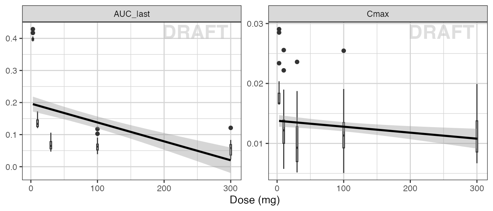
ggplot(data = NCA[!NCA$DOSE == 3 & !NCA$DOSE == 10 , ],
aes(x = DOSE, y = VALUE_NORM)) +
geom_boxplot(aes(group = DOSE)) +
geom_smooth(method = "lm", color = "black") +
facet_wrap(~PARAM, scales = "free_y") +
labs(x = dose_label) +
theme(axis.title.y = element_blank()) +
xgx_annotate_status(status)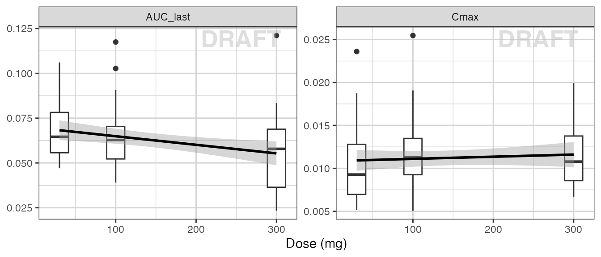
ggplot(data = pk_data_cycle1, aes(x = NOMTIME,
y = LIDV,
group = WEIGHTB > 100,
color = WEIGHTB > 100)) +
xgx_geom_ci(conf_level = 0.95) +
xgx_scale_y_log10() +
xgx_scale_x_time_units(units_dataset = time_units_dataset, units_plot = time_units_plot) +
facet_grid(.~DOSE) +
labs(y = conc_label, color = w100_label) +
xgx_annotate_status(status)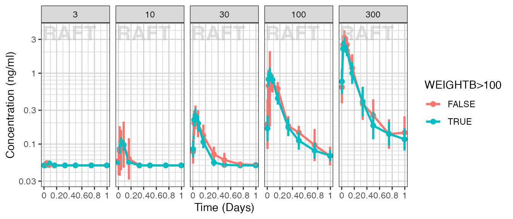
ggplot(data = pd_data, aes(x = NOMTIME,
y = LIDV,
group = DOSE,
color = TRTACT_high2low)) +
xgx_geom_ci(conf_level = 0.95) +
xgx_scale_y_log10() +
xgx_scale_x_time_units(units_dataset = time_units_dataset, units_plot = time_units_plot) +
labs(y = pd_label, color = trtact_label) +
xgx_annotate_status(status)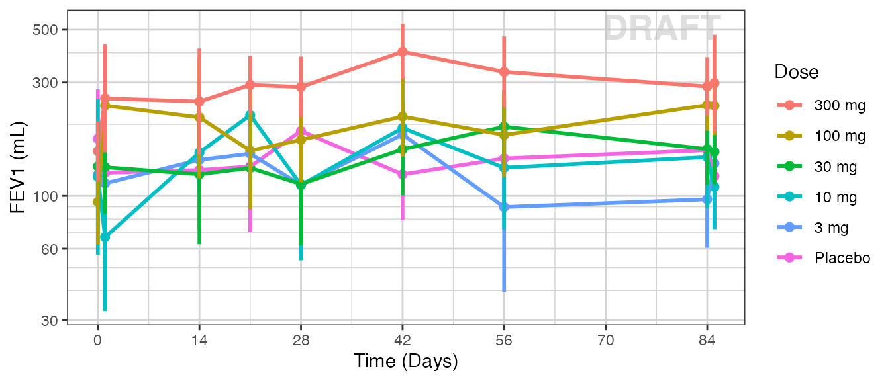
ggplot(data = pd_data, aes(x = NOMTIME, y = LIDV, group = ID)) +
geom_line(alpha = 0.5) +
geom_point(alpha = 0.5) +
xgx_scale_y_log10() +
xgx_scale_x_time_units(units_dataset = time_units_dataset, units_plot = time_units_plot) +
facet_grid(~TRTACT_low2high) +
labs(y = pd_label, color = trtact_label) +
xgx_annotate_status(status)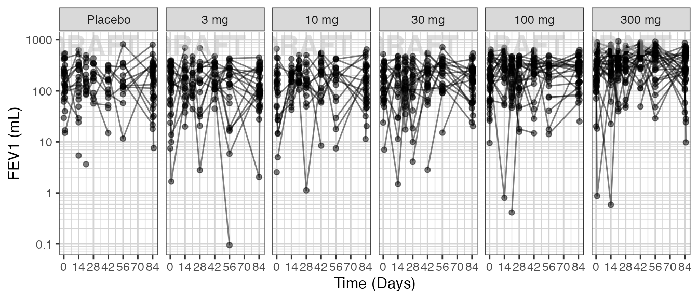
One of the key questions when looking at PD markers is to determine if there is a dose-response relationship, and if there is, what dose is necessary to achieve the desired effect? Simple dose-response plots can give insight into these questions.
Plot PD marker against dose. Using summary statistics can be helpful, e.g. Mean +/- SE, or median, 5th & 95th percentiles.
Here are some questions to ask yourself when looking at Dose-Response plots: Do you see any relationship? Does response increase (decrease) with increasing dose? Are you able to detect a plateau or Emax (Emin) on the effect? If so, around what dose does this occur?
Warning: Even if you don’t see an Emax, that doesn’t mean there isn’t one. Be very careful about using linear models for Dose-Response relationships. Extrapolation outside of the observed dose range could indicate a higher dose is always better (even if it isn’t).
ggplot(data = pd_data_baseline_day85, aes(x = DOSE,
y = LIDV,
group = DOSE)) +
xgx_geom_ci(conf_level = 0.95) +
facet_grid(~DAY_label) +
labs(x = dose_label, y = pd_label, color = trtact_label) +
xgx_annotate_status(status)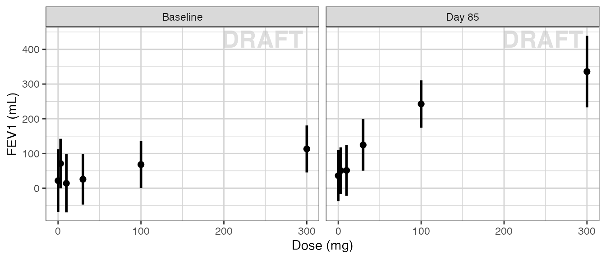
ggplot(data = pd_data, aes(x = DOSE, y = LIDV, group = DOSE)) +
xgx_geom_ci(conf_level = 0.95) +
facet_grid(~DAY_label) +
labs(x = dose_label, y = pd_label, color = trtact_label) +
xgx_annotate_status(status)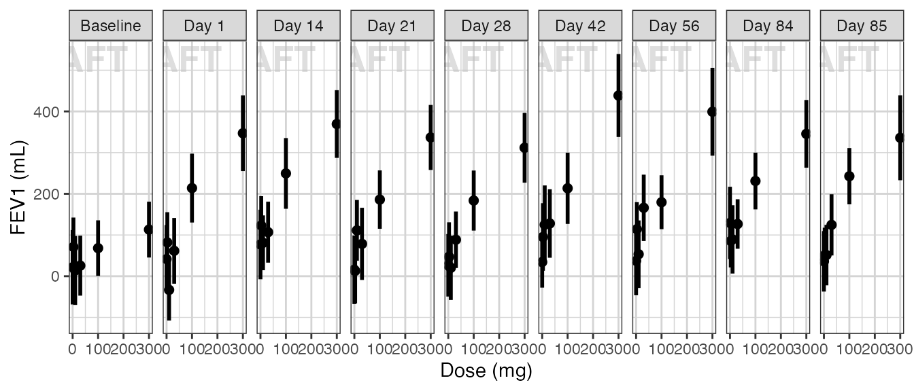
ggplot(data = pd_data_baseline_day85, aes(x = DOSE,
y = LIDV,
group = WEIGHTB > 100,
color = WEIGHTB > 100)) +
xgx_geom_ci(conf_level = .95) +
facet_grid(~DAY_label) +
labs(x = dose_label, y = pd_label, color = w100_label) +
xgx_annotate_status(status)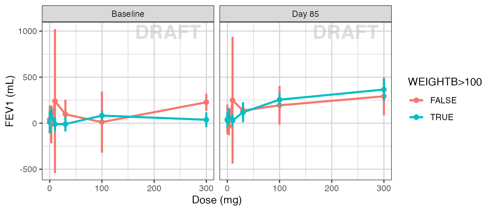
Plot PD marker against concentration. Do you see any relationship? Does response increase (decrease) with increasing dose? Are you able to detect a plateau or Emax (Emin) on the effect?
Warning: Even if you don’t see an Emax, that doesn’t mean there isn’t one. Be very careful about using linear models for Dose-Response or Exposure-Response relationships. Extrapolation outside of the observed dose range could indicate a higher dose is always better (even if it isn’t).
g = ggplot(data = pk_vs_pd_data_day85, aes(x = Concentration, y = Response)) +
geom_point(aes(color = TRTACT_high2low, shape = factor(CENS))) +
geom_smooth(color="black",shape=NULL) +
xgx_scale_x_log10() +
labs(x = conc_label, y = pd_label, color = trtact_label, shape = cens_label) +
xgx_annotate_status(status)
print(g)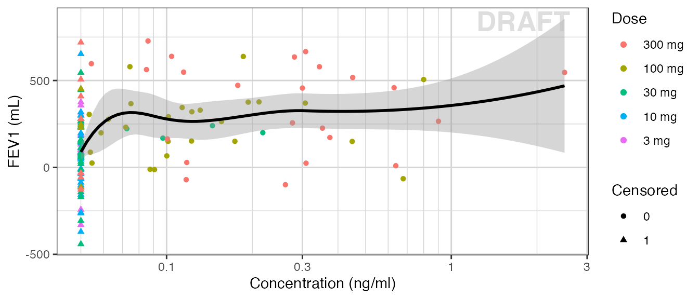
Plotting AUC vs response instead of concentration vs response may make more sense in some situations. For example, when there is a large delay between PK and PD it would be difficult to relate the time-varying concentration with the response. If rich sampling is only done at a particular point in the study, e.g. at steady state, then the AUC calculated on the rich profile could be used as the exposure variable for a number of PD visits. If PK samples are scarce, average Cmin could also be used as the exposure metric.
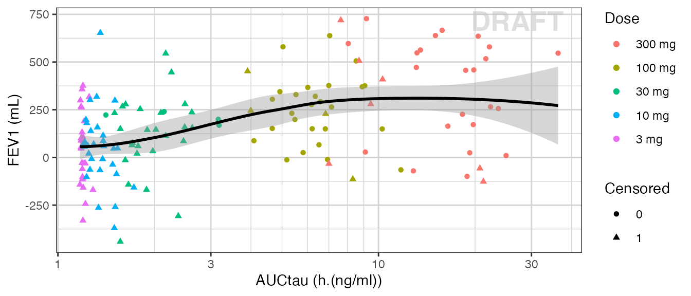
sessionInfo()
#> R version 4.2.3 (2023-03-15)
#> Platform: x86_64-apple-darwin17.0 (64-bit)
#> Running under: macOS Big Sur ... 10.16
#>
#> Matrix products: default
#> BLAS: /Library/Frameworks/R.framework/Versions/4.2/Resources/lib/libRblas.0.dylib
#> LAPACK: /Library/Frameworks/R.framework/Versions/4.2/Resources/lib/libRlapack.dylib
#>
#> locale:
#> [1] en_US.UTF-8/en_US.UTF-8/en_US.UTF-8/C/en_US.UTF-8/en_US.UTF-8
#>
#> attached base packages:
#> [1] stats graphics grDevices utils datasets methods base
#>
#> other attached packages:
#> [1] tidyr_1.3.0 dplyr_1.1.0 ggplot2_3.4.1 xgxr_1.1.2
#>
#> loaded via a namespace (and not attached):
#> [1] nlme_3.1-162 bitops_1.0-7 fs_1.6.1 httr_1.4.5
#> [5] rprojroot_2.0.3 Deriv_4.1.3 tools_4.2.3 backports_1.4.1
#> [9] bslib_0.4.2 utf8_1.2.3 R6_2.5.1 rpart_4.1.19
#> [13] mgcv_1.8-42 Hmisc_5.0-1 colorspace_2.1-0 nnet_7.3-18
#> [17] withr_2.5.0 tidyselect_1.2.0 gridExtra_2.3 Exact_3.2
#> [21] compiler_4.2.3 textshaping_0.3.6 cli_3.6.0 htmlTable_2.4.1
#> [25] binom_1.1-1.1 expm_0.999-7 desc_1.4.2 labeling_0.4.2
#> [29] sass_0.4.5 caTools_1.18.2 scales_1.2.1 checkmate_2.1.0
#> [33] mvtnorm_1.1-3 readr_2.1.4 proxy_0.4-27 pkgdown_2.0.7
#> [37] systemfonts_1.0.4 stringr_1.5.0 digest_0.6.31 foreign_0.8-84
#> [41] rmarkdown_2.20 base64enc_0.1-3 pkgconfig_2.0.3 htmltools_0.5.4
#> [45] highr_0.10 fastmap_1.1.1 htmlwidgets_1.6.2 rlang_1.1.0
#> [49] readxl_1.4.2 rstudioapi_0.14 farver_2.1.1 jquerylib_0.1.4
#> [53] generics_0.1.3 jsonlite_1.8.4 RCurl_1.98-1.10 magrittr_2.0.3
#> [57] Formula_1.2-5 Matrix_1.5-3 Rcpp_1.0.10 DescTools_0.99.48
#> [61] munsell_0.5.0 fansi_1.0.4 lifecycle_1.0.3 stringi_1.7.12
#> [65] yaml_2.3.7 MASS_7.3-58.2 rootSolve_1.8.2.3 grid_4.2.3
#> [69] lmom_2.9 lattice_0.20-45 splines_4.2.3 pander_0.6.5
#> [73] hms_1.1.3 knitr_1.42 pillar_1.9.0 boot_1.3-28.1
#> [77] gld_2.6.6 glue_1.6.2 evaluate_0.20 data.table_1.14.8
#> [81] vctrs_0.6.1 png_0.1-8 tzdb_0.3.0 cellranger_1.1.0
#> [85] gtable_0.3.3 purrr_1.0.1 assertthat_0.2.1 cachem_1.0.7
#> [89] xfun_0.37 e1071_1.7-13 ragg_1.2.5 class_7.3-21
#> [93] minpack.lm_1.2-3 tibble_3.2.1 memoise_2.0.1 cluster_2.1.4